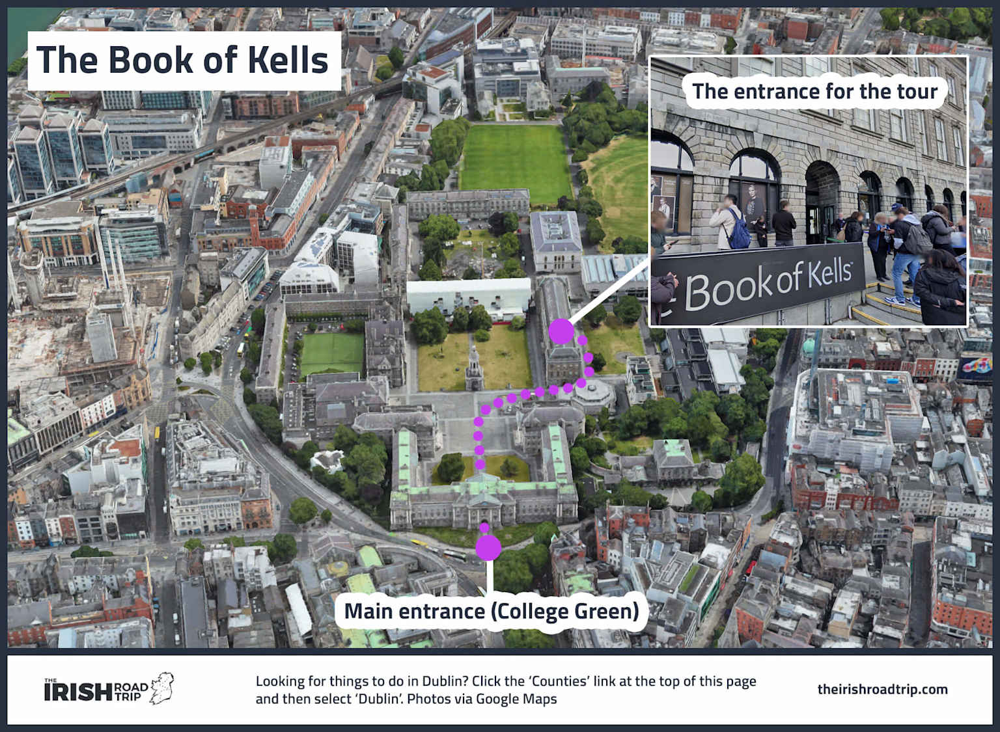

Trinity College Dublin · 개인용 번역판
켈스의 서 오디오 가이드
The Book of Kells Experience · 한국어 오디오 및 텍스트 안내

경로 안내:
올드 라이브러리(Old Library)에서 시작해 켈스의 서와 롱룸(Long Room)을 관람한 후, 도보 1분 거리의 레드 파빌리온(Red Pavilion)으로 이동하여 디지털 전시를 감상합니다.
입구
올드 라이브러리
켈스의 서
롱룸
레드 파빌리온
챕터 1 · 올드 라이브러리 & 켈스의 서
챕터 2 · 레드 파빌리온으로 이동